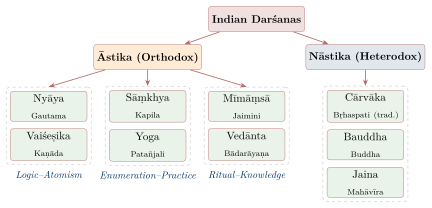
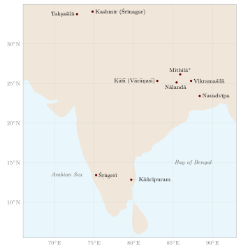

Chapter 1: Introduction — The Panorama of Indian Philosophy¶
1.1 The Meaning of Darśana¶
The Sanskrit word darśana is derived from the verbal root dṛś — “to see”, “to perceive”, “to envision”. In later doxographies such as Haribhadra’s Ṣaḍdarśanasamuccaya (8th century CE) and Mādhava’s Sarvadarśanasaṅgraha (14th century CE), darśana means a “point of view” or “system” of philosophy. Traditional interpreters often gloss it more strongly as a “vision of truth” (tattva-darśana); the technical usage, however, is simply “doctrine” or “school”.
A mature darśana usually offers an account of what there is (tattva), an account of how it can be known (pramāṇa), and an account of the highest human good and the way to it. The proportions differ greatly. Nyāya is mostly epistemology and logic, Vaiśeṣika mostly ontology, Pūrva Mīmāṃsā mostly the interpretation of injunctions, and the Grammarians’ system mostly a philosophy of language.
Most classical Indian systems present themselves as oriented towards mokṣa — liberation from suffering — or towards the highest good (niḥśreyasa). This should not be overstated. A great deal of Indian philosophy, especially in logic, epistemology, grammar and hermeneutics, was pursued with a technical rigour that has no obvious soteriological payoff, and the materialist Cārvāka rejected liberation altogether. Equally, ancient Greek philosophy was itself often understood as a way of life rather than a merely intellectual exercise. The contrast between “spiritual India” and “rational West” is therefore a stereotype that modern scholarship has largely abandoned (Matilal 1986; Ganeri 2001).
1.2 Characteristic Features of Indian Philosophical Inquiry¶
Four features recur across the schools, though none is peculiar to India.
1.2.1 Appeal to Experience and Authority¶
Brahmanical tradition regards the Vedic seers (ṛṣi) as mantra-draṣṭā — “seers” of the mantras rather than their authors — and several schools (Yoga, Buddhism, Jainism) give a central place to the perception of advanced practitioners (yogi-pratyakṣa, the omniscience of the Jina or the Buddha). At the same time, the classical systems argued for their positions with explicit criteria of valid knowledge, and much of their literature is rigorous argument rather than report of experience.
1.2.2 The Question of the Highest Good¶
Most darśanas ask what the highest good for a human being is, and even Cārvāka, which rejects rebirth and liberation, answers the question — with happiness in this life. That the question is asked does not mean that every argument serves it: much of the technical literature on inference, meaning or validity can be read, and was often written, for its own sake.
1.2.3 Commentary as a Form of Innovation¶
Philosophical writing typically took a layered form. A terse foundational text (sūtra), traditionally ascribed to the founder of the system, was explained in a commentary (bhāṣya), which was in turn defended and extended in a sub-commentary (vārttika) and glossed again in further commentaries (ṭīkā); alongside these stood independent treatises on particular topics (prakaraṇa). The form encouraged an author to present a new theory as the right reading of an old text. Innovation was real — Navya-Nyāya and late Advaita are very different from the sūtras they claim to explain — but it was seldom announced as such.
1.2.4 The Culture of Debate (Vāda)¶
Indian philosophy has a well-developed tradition of formal debate. The Nyāya Sūtra (1.2.1–3) distinguishes three kinds of discussion (kathā) — honest inquiry (vāda), disputation for victory (jalpa) and mere refutation (vitaṇḍā) — and Buddhist and Jain logicians wrote their own codes of debate (see Chapter 13, Table 13.5).
1.3 The Classification of Darśanas¶
The most fundamental classification of Indian philosophical schools is the division into Āstika (orthodox) and Nāstika (heterodox) systems. This classification, however, must be understood with care.
Āstika and Nāstika — What Do They Really Mean?
The terms Āstika and Nāstika are often loosely translated as “theistic” and “atheistic,” but this is misleading. In the technical philosophical usage:
-
Āstika (from asti, “there is”) originally meant one who affirms that there is another world, karmic retribution and the like (Pāṇini 4.4.60, asti-nāsti-diṣṭaṃ matiḥ, as the grammatical commentators explain it); in later Brahmanical usage it came to mean a system that accepts the authority (prāmāṇya) of the Vedas.
-
Nāstika (from nāsti, “there is not”) correspondingly meant a denier of the other world, and later a system that does not accept Vedic authority.
Classical Sāṃkhya, counted as āstika, is non-theistic (nirīśvara), and Pūrva Mīmāṃsā — the most Vedic of all schools — explicitly argues against a creator God. Buddhists and Jains, classed as nāstika by Brahmanical authors, accept rebirth, karma and liberation. The classification is therefore about attitudes to Vedic authority, not about belief in God; it is also a Brahmanical classification, which Buddhists and Jains did not use of themselves.
1.3.1 The Six Āstika Darśanas¶
The six orthodox schools are conventionally grouped into three pairs of allied systems (samānatantra). The list of exactly “six” āstika systems is itself a late, doxographical convention; earlier authors also treated Vyākaraṇa (grammar), Śaiva and Vaiṣṇava theologies, and others as darśanas.
-
Nyāya and Vaiśeṣika — Logic-Atomism pair
-
Sāṃkhya and Yoga — Enumeration-Practice pair
-
Pūrva Mīmāṃsā and Uttara Mīmāṃsā (Vedānta) — Ritual-Knowledge pair
Each pair shares many assumptions while differing in emphasis and method (Figure 1.1).

1.3.2 The Three Nāstika Darśanas¶
The three schools that reject Vedic authority set much of the agenda for the others. The materialist Cārvāka or Lokāyata accepted perception as the primary (for its early adherents, the only) means of knowledge and denied any self or world beyond the body. Buddhist philosophy, built on the teaching of dependent origination (pratītyasamutpāda), produced the Abhidharma schools, the Madhyamaka and the Yogācāra, and the epistemology of Dignāga and Dharmakīrti. Jain philosophy combined a realist metaphysics of soul (jīva) and non-soul (ajīva) with the doctrine that reality is many-sided (anekāntavāda).
1.3.3 The Limits of the Āstika/Nāstika Scheme¶
The “six plus three” scheme is a convenient map, and this volume follows it, but it is not a neutral description of Indian thought. Four limits should be kept in mind.
First, the two words changed their meaning. In the older sense recorded by the grammarians, an āstika is one who holds that there is another world and a moral order beyond this life; by that test Buddhists and Jains are āstikas, and only the materialists are nāstika. Buddhist and Jain authors themselves used nāstika in this sense for the materialists. The Brahmanical legal tradition narrowed the term: the Manusmṛti (2.11) calls a twice-born man who, relying on the science of argument (hetuśāstra), disparages the two roots of dharma, Veda and tradition (smṛti), a nāstika and a “reviler of the Veda” (vedanindaka). The second, scriptural sense is the one that produced the modern classification, and it is a judgement made from one side of the debate.
Second, membership of the āstika group did not guarantee orthodoxy in any other respect. Classical Sāṃkhya placed Vedic ritual on a level with ordinary remedies (Chapter 4); Nyāya and Vaiśeṣika built their systems largely by independent argument; and Kumārila complained at the opening of his Ślokavārttika that Mīmāṃsā itself had been turned into a kind of Lokāyata and needed to be brought back to the āstika path.
Third, the number and membership of the “six” varied. The Jain Haribhadra’s Ṣaḍdarśanasamuccaya (8th century) also counts six systems — Buddhist, Nyāya, Sāṃkhya, Jain, Vaiśeṣika and Mīmāṃsā — adding Lokāyata for readers who treat Nyāya and Vaiśeṣika as one; in this count the Buddhists and Jains are among the “āstikas”, and only the Lokāyata is not. Mādhava’s Sarvadarśanasaṅgraha (14th century) reviews sixteen systems, including Pāśupata, Śaiva, Pratyabhijñā, the alchemical Raseśvara school and the Grammarians. The fixed textbook list of six āstika and three nāstika schools owes much to late doxographers such as Vijñānabhikṣu and Madhusūdana Sarasvatī (16th century) and to 19th- and 20th-century presentations of “Hindu philosophy” (Halbfass 1988; Nicholson 2010).
Fourth, the scheme leaves out a great deal: Kaśmīrī Śaiva philosophy and Śaiva Siddhānta, the theologies of the bhakti movements, the Grammarians (treated in Chapter 6), and the śramaṇa movements other than Buddhism and Jainism, of which the Ājīvikas are the most important. The scheme is used in this book as a map of the main lines of argument, not as a ranking of schools.
Other doxographies drew the map differently. The Tamil Buddhist poem Maṇimēkalai (usually placed about the sixth century, though estimates vary) has its heroine hear, in the city of Vañci, the exponents of a series of systems — Vedic interpreters and teachers of the means of knowledge, Śaivas, Vaiṣṇavas, Ājīvikas, Jains, Sāṃkhyas, Vaiśeṣikas and materialists — before she receives the Buddhist teaching, including an account of perception and inference close to that of the Buddhist logicians. It is one of the earliest surveys of Indian philosophy in any language, and it orders the systems as a Buddhist would (Zvelebil 1973).
A more radical criticism came from the philosopher Daya Krishna (1924–2007). In Indian Philosophy: A Counter Perspective (1991) and in earlier essays he argued that the familiar picture — a fixed set of “schools”, each a closed system oriented to liberation — is largely a modern construction, which hides a tradition of open-ended argument in which positions were constantly revised in debate (Daya Krishna 1991). One need not accept all of his conclusions to see the force of the point. This volume keeps the conventional chapter divisions for the sake of orientation, but it tries throughout to show the schools arguing with one another, and it returns to Daya Krishna’s challenge in its conclusion (Section 13.10).
1.3.4 Other Śramaṇa Schools: The Ājīvikas¶
The Buddha and Mahāvīra were two among many wandering teachers (śramaṇas) in the eastern Ganges plain. The Pali Sāmaññaphala Sutta (Dīgha Nikāya 2) summarises the doctrines of six of them: Pūraṇa Kassapa, who denied that actions bring merit or demerit; Makkhali Gosāla, who taught that everything is governed by destiny (niyati); Ajita Kesakambalī, the materialist discussed in Chapter 9; Pakudha Kaccāyana, who held that a person is made of seven eternal, unchanging bodies, so that a sword passing through them kills no one; Nigaṇṭha Nātaputta, that is, Mahāvīra; and Sañjaya Belaṭṭhiputta, who refused to commit himself to any answer. The reports are hostile and schematic, but they show that the debates about action, causation and the self that the classical schools later systematised were already lively in the Buddha’s time.
The most durable of these movements was that of the Ājīvikas, associated above all with Makkhali Gosāla (Sanskrit Maskarin Gośāla). According to the Buddhist report, Gosāla taught that beings have no power of their own to change their destiny: they are shaped by destiny, by circumstance and by their own nature, and are purified only by passing through a fixed, immense number of rebirths, as a ball of thread unwinds to its end when thrown. Human effort, on this view, can neither hasten nor delay liberation. The Ājīvikas were nevertheless known for severe asceticism, and their determinism was a serious philosophical position, not mere fatalism: Buddhist and Jain authors devoted considerable effort to refuting it because it denied the efficacy of moral action on which their own paths depended. The Jain Bhagavatī Sūtra (book 15) gives a long and hostile account of Gosāla, who is said to have been a companion of Mahāvīra for some years before they quarrelled.
The Ājīvikas were a recognised order in the Mauryan period: Aśoka and his grandson Daśaratha dedicated rock-cut caves to them in the Barābar and Nāgārjunī hills of Bihar. They are mentioned in Tamil literature (the Maṇimēkalai summarises their doctrine) and in South Indian inscriptions into the second millennium CE, after which they disappear. No Ājīvika text survives; everything we know comes from their rivals, as with the Cārvākas. A.L. Basham’s monograph remains the standard study, and more recent work has used the Ājīvikas to reconstruct the wider śramaṇa culture of “Greater Magadha” from which Buddhism, Jainism and the yogic and ascetic strands of Brahmanical thought all drew (Basham 1951; Bronkhorst 2007).
1.4 The Historical Development of Philosophical Thought¶
1.4.1 The Vedic Period (c. 1500–500 BCE)¶
Philosophical questioning begins in the Ṛg Veda itself. The Nāsadīya Sūkta (ṚV 10.129) opens with a negation (nāsad āsīn no sad āsīt, “there was then neither non-being nor being”) and ends by wondering whether even the overseer in the highest heaven knows how the world arose; it is a speculative poem rather than a doctrine, and it is discussed in its Vedic setting in Vol. 1, Veda Prakāśa. What matters for the later darśanas is the habit it displays: asking what lies behind the plurality of things, and admitting the limits of the answer.
The period of the early Upaniṣads (c. 800–300 BCE) saw the crystallization of fundamental philosophical concepts — Brahman, Ātman, Karma, Mokṣa — that would become the common inheritance of all subsequent Indian thought.
1.4.2 The Sūtra Period (c. 300 BCE – 500 CE)¶
Over several centuries the āstika schools codified their doctrines in foundational sūtra texts. The dates below are the approximate ranges accepted in mainstream scholarship; most sūtra texts grew in layers, and the founders are largely figures of tradition (Frauwallner 1973; Potter 1977); see Table 1.1.
| School | Founder | Sūtra Text | Approximate Date |
|---|---|---|---|
| Nyāya | Akṣapāda Gautama | Nyāya Sūtra | compiled c. 2nd–3rd cent. CE (older layers) |
| Vaiśeṣika | Kaṇāda | Vaiśeṣika Sūtra | c. 1st cent. BCE – 1st cent. CE |
| Sāṃkhya | Kapila (legendary) | Sāṃkhyakārikā of Īśvarakṛṣṇa\(^{*}\) | c. 350–450 CE |
| Yoga | Patañjali | Pātañjala Yogaśāstra (Sūtra with Bhāṣya) | c. 325–425 CE (Maas) |
| Pūrva Mīmāṃsā | Jaimini | Mīmāṃsā Sūtra | c. 2nd cent. BCE (range 3rd–1st BCE) |
| Vedānta | Bādarāyaṇa | Brahma Sūtra | final form c. 1st–5th cent. CE (estimates vary) |
\(^{*}\)No early sūtra text of Sāṃkhya survives; the Sāṃkhyasūtra ascribed to Kapila is late (see Chapter 4).
1.4.3 The Age of Commentaries (c. 200–1000 CE)¶
This period saw the composition of the great bhāṣyas (commentaries), vārttikas (sub-commentaries), and independent treatises that elaborated, defended, and often transformed the original sūtra traditions. It was a period of intense debate among Buddhist, Jaina and Brahmanical schools; the Buddhist logicians Dignāga and Dharmakīrti in particular reshaped the agenda of every school that came after them.
Its principal figures include the Buddhist Nāgārjuna (c. 2nd century CE), founder of the Madhyamaka, and the Yogācāra systematisers Asaṅga and Vasubandhu (c. 4th–5th century); the Jain authors Umāsvāti and Kundakunda (dates disputed, c. 2nd–6th century); the Brahmanical commentators Vātsyāyana on Nyāya, Praśastapāda on Vaiśeṣika, Īśvarakṛṣṇa on Sāṃkhya, “Vyāsa” on the Yoga Sūtra (possibly Patañjali himself) and Śabara on Mīmāṃsā; the Grammarian Bhartṛhari (5th century); Dignāga (c. 480–540) and Dharmakīrti (6th–7th century, often given as c. 600–660); and Śaṅkara (c. 700–750 in most recent scholarship; the older conventional dates are 788–820). A chronology of these and later thinkers is given at the end of the volume.
1.4.4 The Scholastic Period (1000–1700 CE)¶
This era was marked by the rise of Navya-Nyāya (“New Logic”), founded by Gaṅgeśa of Mithilā (14th century) and developed at Navadvīpa in Bengal; by the Viśiṣṭādvaita (Rāmānuja, 11th–12th century) and Dvaita (Madhva, 13th century) schools of Vedānta; by Śaiva philosophy, both the dualist Siddhānta and the Kaśmīrī non-dualism of Utpaladeva (c. 925–975) and Abhinavagupta (c. 950–1016) (Chapter 12); by the dialectical Advaita of Śrīharṣa and Madhusūdana Sarasvatī; and, until the decline of Buddhism in northern India in the 12th–13th centuries, by continuing Buddhist–Brahmanical debate.
1.4.5 The Modern Period (1800 CE – Present)¶
The encounter with Western philosophy and colonialism led to creative reinterpretations of Indian philosophical traditions by thinkers such as Svāmī Vivekānanda, Sri Aurobindo, Sarvepalli Radhakrishnan, K.C. Bhattacharyya and B.R. Ambedkar (whose The Buddha and His Dhamma, 1957, recast Buddhism as a philosophy of social liberation); their Vedāntic reinterpretations are discussed in Chapter 8.
After independence, academic philosophy in India took a different turn. K.C. Bhattacharyya’s son Kalidas Bhattacharyya, and later J.N. Mohanty, B.K. Matilal and Daya Krishna, read the classical texts with the tools of phenomenology and analytic philosophy and argued that their arguments could be assessed as arguments, not only as documents of a culture (Matilal 1986; Mohanty 2000). Matilal’s studies of perception, logic and language, Mohanty’s work on the theory of knowledge, and Daya Krishna’s Saṃvāda experiment of the 1980s — in which traditional paṇḍits and university philosophers debated Navya-Nyāya and modern logic face to face — are the immediate background of much recent scholarship, including that on which this volume draws.
1.5 The Philosophical Questions¶
All Indian philosophical schools, despite their divergences, address a common set of fundamental questions (Table 1.2):
| Domain | Central Questions |
|---|---|
| Metaphysics (Tattva-Mīmāṃsā) | What is ultimately real? What is the nature of the Self, the world, and God? |
| Epistemology (Pramāṇa-Śāstra) | How do we know? What are the valid means of knowledge? |
| Ethics (Dharma-Śāstra) | What is the right way to live? What is dharma? |
| Soteriology (Mokṣa-Śāstra) | What is liberation? How is it attained? |
| Logic (Tarka-Śāstra) | What constitutes valid reasoning? How should arguments be structured? |
1.6 Epistemological Foundations: The Pramāṇas¶
Each school defines the means of valid knowledge (pramāṇas) it accepts, and much inter-school debate turns on their number and nature. The lists range from one (perception alone, for the early Cārvākas) to six (for the Bhāṭṭa Mīmāṃsakas and the Advaitins, who add comparison, postulation and non-apprehension to perception, inference and testimony). The disagreement is not merely about counting. To accept testimony as an independent means of knowledge is to allow that a text such as the Veda can tell us what no perception or inference could; to reduce it to inference, as the Buddhist and Vaiśeṣika epistemologists did, is to make every word answerable to reasons. A single table of which school accepts which means of knowledge is given in Chapter 13 (Table 13.1), where the disputes are compared.
1.7 The Integrative Vision¶
The Indian philosophical tradition is best understood not as a collection of isolated systems but as a long conversation — often a sharp and polemical one — in which each school defined itself against its rivals.
The Rig Vedic Spirit of Inquiry
ekaṃ sad viprā bahudhā vadanti
That which is one, the inspired poets call by many names.
— Ṛg Veda 1.164.46
This Vedic line, which in context speaks of one divine reality called Indra, Mitra, Varuṇa, Agni and so on, is often quoted today as a motto of pluralism. It should not be read back into the classical schools, which argued vigorously that their rivals were wrong. The present volume, Darśana Darpaṇa, tries to present each school on its own terms, including the points on which the schools could not all be right.
1.8 The Concept of Tattva: Reality in Indian Thought¶
The Sanskrit term tattva (literally “that-ness” or “the reality of that”) is a central concept in all darśanas. Each school provides its own enumeration of tattvas — the fundamental principles that constitute reality (Table 1.3).
| School | Number of Tattvas | Key Features |
|---|---|---|
| Sāṃkhya | 25 | Puruṣa and Prakṛti with 23 evolutes |
| Yoga | 25 | Sāṃkhya’s 25, with īśvara as a special puruṣa (sometimes counted as a 26th) |
| Vaiśeṣika | 6 (later 7) | Six categories (padārtha); absence (abhāva) added as a seventh from c. 10th century |
| Nyāya | 16 | Sixteen epistemological-logical categories |
| Advaita Vedānta | 1 | Brahman alone is ultimately real |
| Śaiva Siddhānta | 36 | Śiva Tattva through Pṛthivī Tattva |
| Jainism | 7 | Jīva, Ajīva, Āsrava, Bandha, Saṃvara, Nirjarā, Mokṣa |
| Buddhism | Varies | Dharmas (75 in Sarvāstivāda; 100 in Yogācāra) |
1.8.1 Tattva as Ontological Foundation¶
The enumeration of tattvas is not a mere intellectual exercise; in several schools it is tied to liberation. In Sāṃkhya, understanding the 25 tattvas and discriminating Puruṣa from Prakṛti is itself the means of liberation; the Nyāya Sūtra (1.1.1) likewise promises the highest good from true knowledge (tattvajñāna) of its sixteen categories. In Advaita Vedānta, recognizing that only Brahman is ultimately real dissolves the apparent multiplicity.
1.9 The Puruṣārthas and Philosophical Inquiry¶
The Brahmanical scheme of the puruṣārthas, the goals of human life, gives a convenient way of locating the schools. The older scheme had three goals (trivarga): dharma (right conduct and religious duty), artha (prosperity and power) and kāma (pleasure); liberation (mokṣa) was added later as a fourth and, for most schools, as the highest. Mīmāṃsā, at least in its earlier formulations, gives primacy to dharma; the Cārvākas, as their opponents report them, recognised only pleasure, with wealth as its means, and rejected both dharma and mokṣa; Vedānta, Sāṃkhya, Yoga, Nyāya and Vaiśeṣika make liberation the supreme goal. The scheme is a Dharmaśāstra and epic framework, which holds that worldly goals are legitimate when pursued within dharma; the Bhagavad Gītā offers one influential synthesis, in which action, devotion and knowledge can all lead to liberation. Buddhist and Jain authors used frameworks of their own, centred on the path to nirvāṇa or mokṣa.
1.10 The Common Doctrinal Heritage¶
Despite their differences, the Indian philosophical schools share a set of common doctrines and presuppositions that form the background of their mutual engagement. Understanding these shared assumptions is essential for appreciating the nature of their disagreements.
1.10.1 The Doctrine of Karma and Rebirth¶
All Indian schools except Cārvāka accept some form of the doctrine of karma (action and its results) and punarjanma (rebirth). This doctrine provides the existential context for philosophical inquiry: the human being is trapped in an endless cycle of birth, death, and rebirth (saṃsāra), and philosophy offers the means of escape (Table 1.4).
| School | Understanding of Karma |
|---|---|
| Nyāya-Vaiśeṣika | Karma produces adṛṣṭa (unseen merit/demerit) inhering in the ātman; God dispenses results |
| Sāṃkhya-Yoga | Karma creates saṃskāras (impressions) in the citta; effects manifest through prakṛti |
| Mīmāṃsā | Ritual karma produces apūrva (transcendent potency) that yields results independently |
| Advaita Vedānta | Karma operates within the realm of māyā; ultimately transcended by jñāna |
| Buddhism | Karma is cetana (intention); no permanent self undergoes rebirth; continuity through consciousness-stream |
| Jainism | Karma is subtle material particles (kārmaṇa pudgala) that physically bind to the jīva |
| Cārvāka | Karma and rebirth are rejected as unverifiable and as priestly fabrications |
1.10.2 The Problem of Duḥkha (Suffering)¶
The starting point of most Indian philosophical systems is the recognition of duḥkha — the pervasiveness of suffering in conditioned existence. The Sāṃkhyakārikā opens with the inquiry provoked by “the torment of the threefold suffering” (Chapter 4); the Buddha’s first sermon proclaims the Noble Truth of Suffering (Chapter 10); and even the Nyāya Sūtra (1.1.22) defines liberation (apavarga) as complete release from pain.
1.10.3 The Concept of Mokṣa (Liberation)¶
While all schools (except Cārvāka) affirm the possibility of liberation, they differ significantly in their understanding of its nature (Table 1.5):
| School | Conception of liberation |
|---|---|
| Nyāya | Cessation of suffering; the ātman exists without any qualities |
| Sāṃkhya | Kaivalya: isolation of Puruṣa from Prakṛti |
| Yoga | Kaivalya: consciousness established in its own nature |
| Advaita | Identity with Brahman; realization of “I am Brahman” |
| Viśiṣṭādvaita | Eternal blissful communion with Nārāyaṇa |
| Dvaita | Eternal blissful servitude to Lord Viṣṇu; souls retain individuality |
| Buddhism | Nirvāṇa: cessation of craving and the cycle of becoming |
| Jainism | Infinite knowledge, perception, bliss, and energy of the pure jīva |
1.11 The Methodology of Philosophical Inquiry¶
Indian philosophical inquiry follows a methodology that combines reverence for tradition with rigorous rational analysis.
1.11.1 The Anubandha-catuṣṭaya¶
Many commentators, above all in later Advaita Vedānta (for example Sadānanda’s Vedāntasāra), open a work by stating its anubandha-catuṣṭaya — the four “connected factors” that justify undertaking the study of a śāstra:
The Four Connected Factors (Anubandha-catuṣṭaya)
-
Viṣaya (Subject Matter) — What is the text about?
-
Prayojana (Purpose) — What benefit does the study yield?
-
Adhikārī (Qualified Student) — Who is fit to study this text?
-
Sambandha (Connection) — How is the text related to its subject and its purpose?
The question of the qualified student (adhikārī) is also where restrictions of caste and gender entered the definition of who might study (see Section 1.14).
1.11.2 Tarka: The Role of Reasoning¶
While all Indian schools accept some form of reasoning (tarka), they differ on its scope and authority. A recurring theme is the distinction between independent reasoning (śuṣka-tarka, “dry reasoning”) and reasoning guided by scripture:
The Limits of Mere Reasoning
tarko ’pratiṣṭhaḥ śrutayo vibhinnā
naiko ṛṣir yasya mataṃ pramāṇam
Reasoning is unstable; the scriptures differ among themselves; there is no single sage whose opinion is authoritative.
— Mahābhārata, Āraṇyakaparvan (Yudhiṣṭhira’s answers to the Yakṣa; vulgate reading, Bombay/Calcutta 3.313.117; not in the constituted text of the Critical Edition, which relegates it to an appended passage after 3.297.61)
The epic verse goes on to recommend following “the path the great have taken”. It expresses a widespread suspicion of unaided reasoning; the Nyāya, Buddhist and Jain logicians, by contrast, built elaborate theories of when reasoning is reliable.
1.12 The Darśanas in Comparative Perspective¶
Table 1.6 sets the nine conventional schools side by side on two questions: what is ultimately real, and what, if anything, frees a person from suffering. Their answers to the question of how anything is known are compared in Chapter 13.
| Darśana | Ultimate Reality | Means to Liberation |
|---|---|---|
| Nyāya | Pluralistic: selves, God, atoms and other substances | Right knowledge of the sixteen categories |
| Vaiśeṣika | Pluralistic: nine substances, including atoms; God from Praśastapāda onwards | Knowledge of the categories |
| Sāṃkhya | Dualistic: many selves (puruṣa) and one primordial nature (prakṛti) | Discriminative knowledge (viveka) |
| Yoga | Sāṃkhya’s dualism, with īśvara as a special self | The eight-limbed discipline |
| Mīmāṃsā | Pluralistic realism; no creator God | Performance of Vedic dharma |
| Advaita Vedānta | Non-dual: Brahman alone | Knowledge of the self’s identity with Brahman |
| Cārvāka | Materialist: four elements | No liberation; happiness in this life |
| Buddhism | Dependent origination; no permanent self; emptiness (Madhyamaka) or mind only (Yogācāra) | The eightfold path; insight (prajñā) |
| Jainism | Pluralistic: infinitely many souls and five kinds of non-soul | Right faith, knowledge and conduct together |
1.13 Modern Uses of the Darśanas¶
The classical schools are also read today for purposes their authors did not have in view, and it is worth being clear about the difference. Philosophers of mind compare Sāṃkhya’s separation of consciousness from the intellect, or Buddhist debates on reflexive awareness, with modern theories of consciousness (Ganeri 2001); logicians have studied the precision of Navya-Nyāya (Ingalls 1951; Matilal 1968); philosophers of language have taken up Bhartṛhari’s holism and Dignāga’s theory of exclusion (Matilal 1990). These are legitimate uses, and recent work has shown that Indian arguments can be engaged on their merits (Matilal 1986; Siderits 2007). Other uses are looser. Jain non-violence is invoked in environmental ethics, though its classical purpose was the purification of the soul, and modern mindfulness programmes borrow from Buddhist and yogic analyses of the mind while changing their aims. This volume does not argue for or against such adaptations; it tries to state what the classical texts themselves held, so that the reader can judge how far a modern use is faithful to them.
1.14 The Guru-Śiṣya Paramparā in Philosophical Transmission¶
The transmission of philosophical knowledge in India took place largely within teacher–student lineages (guru-śiṣya paramparā), in Brahmanical households and maṭhas, and in Buddhist and Jain monasteries. Innovation was common, but it was usually presented as the correct interpretation of an earlier authority rather than as a break with it.
1.14.1 The Structure of Philosophical Education¶
The traditional model of philosophical learning involved several stages. The student (adhikārī) first had to demonstrate the requisite qualifications, which typically included a command of Sanskrit grammar (vyākaraṇa), familiarity with the Vedic corpus, and the moral and intellectual discipline necessary for sustained inquiry. In Brahmanical institutions eligibility was also defined by birth and gender: Vedic study, and hence the formal study of Mīmāṃsā and Vedānta, was restricted to twice-born males (see below). The guru would then guide the student through the foundational texts of the chosen darśana, beginning with the sūtras and proceeding through the commentarial literature.
Study usually proceeded from memorising the foundational text, through critical examination of its arguments — learning to state the opponent’s position (pūrvapakṣa) before the established conclusion (siddhānta) — to practice in debate as proponent and opponent, and finally, for a few, to the composition of new works.
1.14.2 Major Centres of Philosophical Learning¶
Throughout Indian history, certain centres emerged as focal points for philosophical study and debate. These institutions fostered the development and refinement of the various darśanas (Table 1.7).
| Centre | Period | Philosophical Traditions |
|---|---|---|
| Takṣaśilā | c. 5th c. BCE – 5th c. CE | A city with renowned private teachers (grammar, medicine) according to Jātakas and other texts; not an institutional university |
| Nālandā | c. 5th – 12th c. CE | Buddhist monastic university; Madhyamaka, Yogācāra, pramāṇa |
| Vikramaśilā | c. 8th – 12th c. CE | Vajrayāna Buddhism; Tantric philosophy |
| Kāśī (Vārāṇasī) | Ancient – present | All six āstika darśanas; Vedānta; Vyākaraṇa |
| Mithilā | c. 11th – 18th c. CE | Nyāya (Udayana), Navya-Nyāya (Gaṅgeśa); Dharmaśāstra |
| Navadvīpa | c. 15th – 18th c. CE | Navya-Nyāya; Gauḍīya Vaiṣṇavism |
| Kāñcīpuram | Ancient – present | Buddhist, Jain and later Vaiṣṇava and Advaita learning |
| Śṛṅgerī | medieval – present | Advaita Vedānta (founding by Śaṅkara is traditional) |
The places in Table 1.7, with Kashmir, where much of the Śaiva and later Nyāya literature was written, are shown in Figure 1.2.

1.14.3 The Culture of Inter-School Engagement¶
A notable feature of the Indian philosophical landscape was the sustained engagement between rival schools. Philosophers were expected to master not only their own tradition but also the positions of competing schools. The pūrvapakṣa-siddhānta method — in which a philosopher first presents the strongest version of the opponent’s argument before offering a refutation — ensured intellectual honesty and depth. This practice is found throughout the commentarial literature, from Uddyotakara’s defence of Nyāya against Dignāga to Śaṅkara’s refutation of Sāṃkhya, Buddhism and Jainism in the Brahmasūtrabhāṣya, and Buddhists such as Śāntarakṣita who surveyed and criticised every rival school in the Tattvasaṅgraha.
1.15 The Philosophical Vocabulary of Darśana¶
A proper understanding of Indian philosophy requires familiarity with a set of key technical terms that recur across all the darśanas. These terms constitute the shared vocabulary of Indian philosophical discourse (Table 1.8).
| Sanskrit Term | Translation | Philosophical Significance |
|---|---|---|
| Dravya | Substance | The substratum that bears qualities and undergoes change |
| Guṇa | Quality, attribute | Properties that inhere in substances |
| Karma | Action, deed | Both physical action and its unseen moral consequences |
| Kāraṇa | Cause | That which produces an effect; classified into material, efficient, and instrumental |
| Kārya | Effect | The product of a causal process |
| Svabhāva | Inherent Nature | The essential nature of a thing |
| Padārtha | Category | A fundamental kind of being; the basic ontological unit |
| Sambandha | Relation | The connection between two entities; a key topic of analysis |
1.15.1 The Problem of Philosophical Translation¶
Terms like dharma, karma, māyā and brahman carry layers of meaning that resist simple translation, and the same term may mean different things in different schools. Dharma is “that which is enjoined by the Veda” in Mīmāṃsā, the “medium of motion” in Jain ontology, “merit” (a quality of the self) in Vaiśeṣika, and both “the teaching” and a “basic element of existence” in Buddhism. Even pramāṇa shifts: Nyāya counts four, the Mīmāṃsakas five or six, and the Buddhist epistemologists two, defining perception in a radically different way as free from conceptual construction. The reader should always ask which school’s usage is in play.
1.16 Philosophy, the Other Sciences and Society¶
1.16.1 Darśana and the Śāstric Tradition¶
The philosophical schools supplied concepts and methods to many other Indian śāstras (systematic disciplines). The logical methods of Nyāya were used in many other fields of learning, from grammar to law. Categories close to those of Sāṃkhya and Vaiśeṣika appear in the theory of Āyurveda. The hermeneutical principles of Mīmāṃsā shaped the interpretation of legal texts in Dharmaśāstra. The psychological vocabulary of Yoga was widely shared by later religious and medical literature.
1.16.2 The Darśanas and Social Order¶
The philosophical schools also addressed questions of social organization and individual conduct. The Mīmāṃsā emphasis on dharma as revealed through Vedic injunctions provided a philosophical basis for the performance of social duties. The Nyāya arguments for the existence of God and the moral law supported the traditional understanding of cosmic justice.
The philosophical schools were not neutral on social hierarchy. Vedic learning — and hence formal training in Mīmāṃsā and Vedānta — was restricted to twice-born men. The Brahmasūtra (1.3.34–38) denies śūdras eligibility (adhikāra) for Vedic knowledge, and Śaṅkara’s commentary on these sūtras, citing the Dharmaśāstras, endorses severe penalties for a śūdra who hears or recites the Veda, while allowing that śūdras may attain liberation through the epics and Purāṇas. Women’s access was similarly restricted, though the Upaniṣads remember women such as Gārgī and Maitreyī as participants in philosophical debate. Buddhist texts criticised claims of brahmin superiority by birth (for example in the Assālāyana and Vāseṭṭha Suttas), and both Buddhist and Jain orders admitted members of all castes and women as renunciants, although monastic rules subordinated nuns to monks. Devotional movements and, in the modern period, B.R. Ambedkar drew on these resources in criticising caste (Ambedkar 1957; Olivelle 2005).
1.16.3 Women and Philosophical Tradition¶
What the sources say about women in philosophy is limited, and what they leave out is telling. The Bṛhadāraṇyaka Upaniṣad remembers Gārgī Vācaknavī, who questions Yājñavalkya in a public contest, and Maitreyī, to whom he teaches the doctrine of the self. The Mahābhārata (Śāntiparvan) gives the female ascetic Sulabhā a debate with King Janaka, in which she argues that he has not attained the freedom he claims. Buddhist nuns’ verses survive in the Therīgāthā (Chapter 10), and the Jain sects disagreed about whether a woman can attain liberation at all (Chapter 11). The later Advaita hagiographies make Ubhayabhāratī, wife of Maṇḍana Miśra, the judge of his debate with Śaṅkara, but this is legend, not history. Women’s voices are clearer in devotional poetry — the Tamil Kāraikkāl Ammaiyār and Āṇṭāḷ, the Kannada Akka Mahādēvi, the Kashmiri Lalleśvarī (Lal Ded) — than in the śāstric literature of the schools, where almost no surviving systematic treatise is known to be by a woman. The silence reflects the restrictions on Vedic and śāstric education described above, not an absence of thought; and it means that the philosophy surveyed in this book is very largely the philosophy of men of a few social groups.
1.17 Organization and Scope of This Volume¶
Chapters 2–6 treat five of the six āstika schools — Nyāya, Vaiśeṣika, Sāṃkhya, Yoga and Pūrva Mīmāṃsā — the last together with the Grammarian philosophy of language of Bhartṛhari, its chief rival on the nature of words. Chapters 7 and 8 treat Vedānta and its many schools. Chapters 9–11 treat the three schools that Brahmanical authors called nāstika: Cārvāka, Buddhist and Jain philosophy. Chapter 12 treats Śaiva philosophy — the Śaiva Siddhānta, including its Tamil form, and the Pratyabhijñā of Somānanda, Utpaladeva and Abhinavagupta. Chapter 13 compares the schools’ theories of knowledge, error and debate and draws the volume’s conclusions. Most chapters cover, in roughly this order, history and texts, doctrines and the arguments for them, the school’s theory of knowledge, its debates with rivals, and its later influence. Readers new to the subject may read the chapters in order; others can follow the cross-references. A chronology of thinkers, a list of abbreviations, a guide to editions and further reading, and a glossary are given at the end.
1.17.1 What This Volume Leaves Out¶
A book with this title should say plainly what it does not cover. First, Indo-Islamic and Indo-Persian thought is absent. From the thirteenth century onwards India had a rich tradition of Islamic philosophy, theology and logic in Arabic and Persian: the rational sciences were taught in the madrasas, and the eighteenth-century theologian Shāh Walī Allāh of Delhi wrote systematic works on metaphysics and ethics. The meeting of Islamic and Indian thought produced texts that are philosophical by any reasonable definition, such as the Mughal prince Dārā Shikōh’s Majma‘ al-Baḥrayn (“The Mingling of the Two Oceans”, 1655), which sets the categories of Sufism beside those of Vedānta, and his Persian translation of fifty Upaniṣads (1657). The series plan lists Indo-Islamic and Indo-Persian knowledge as a gap that no volume yet fills, and this volume shares that gap. Second, Tamil and other regional-language philosophy is treated only in part: the Tamil Śaiva Siddhānta is described in Chapter 12, the Maṇimēkalai’s survey of the systems above, and the Tamil devotional background of Rāmānuja in Chapter 7; the thought of the Āḻvār and Nāyaṉmār poets, of the Vīraśaiva vacanas in Kannada and of the Sikh scriptures is not covered. Third, modern Indian philosophy after K.C. Bhattacharyya receives only the brief account given above. Finally, the volume concentrates on Sanskrit and Pali sources and on argument; the religious and institutional history of the traditions belongs to other volumes of the series — Buddhist and Jain traditions to Volume 4 (Buddha–Jina Prabhā), yoga practice to Volume 5 (Yoga Taraṅgiṇī), Śaiva scripture and ritual to Volume 6 (Tantra–Āgama), grammar to Volume 10 (Śabda Vidyā), the medical use of Sāṃkhya and Vaiśeṣika categories to Volume 13 (Āyurveda) and Mīmāṃsā in law to Volume 18 (Rājanīti and Dharmaśāstra).